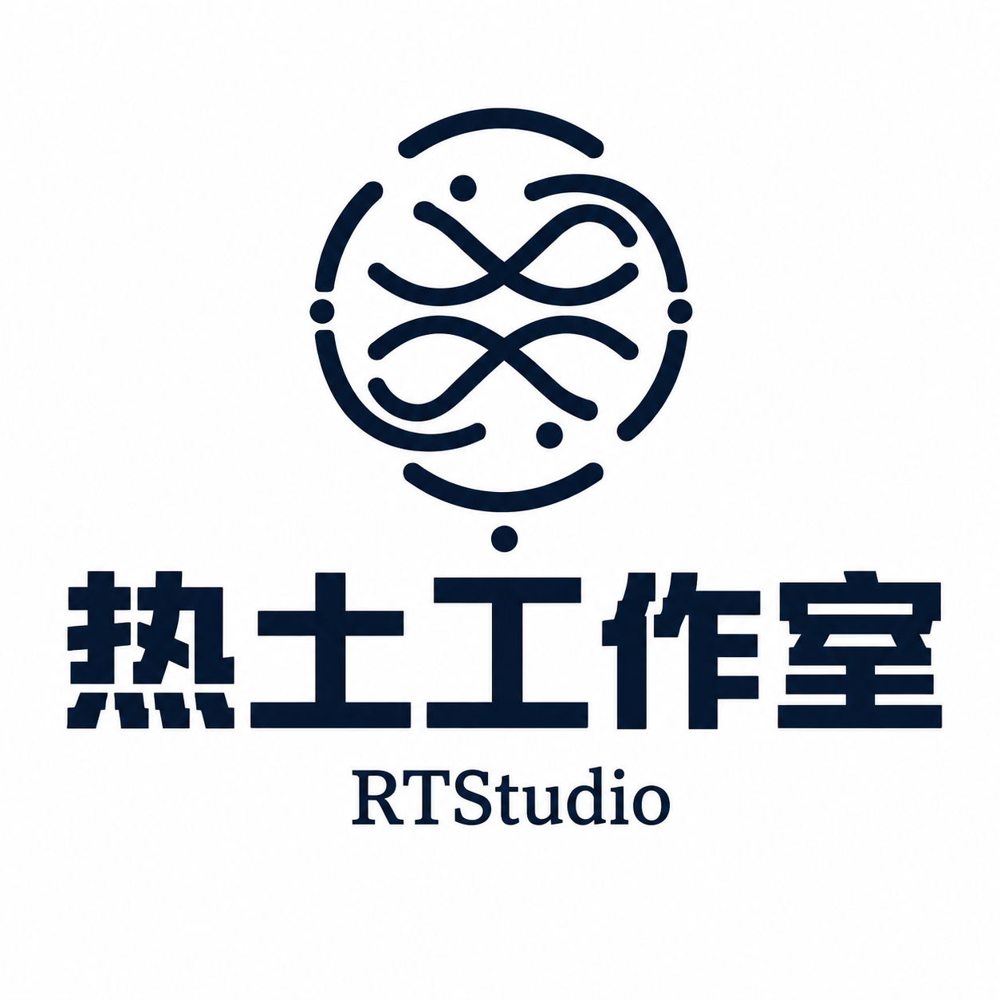
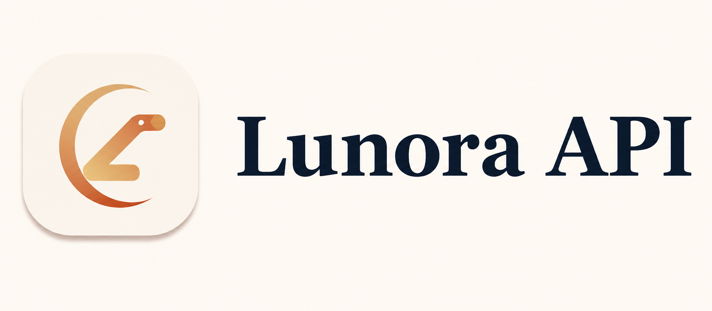

Position定位
搞清楚这东西是给谁用的、解决什么。答不上来就先别画——这一步不做，后面全是返工。
- 产出
- 一句话定位
- 工期
- 占全项目 15%
不是四个卖点，是一条真的工序。跳步的活我们会跟你商量；商量不通，就不接。
搞清楚这东西是给谁用的、解决什么。答不上来就先别画——这一步不做，后面全是返工。
信息怎么排、路径怎么走、内容先说什么。这些决定在画第一根线之前，不在配色之后。
设计稿就是代码。我们不画完再切图——你看到的就是最后跑的，且能在真机上验证。
上线不是结束。改了文案、加了一页功能，或者只是想找人聊聊怎么改更好，都回来找我们。
一个人可以同时做这三件事，因为它们本来就是一件事：让东西被看见、被记住、被用起来。
从信息架构到上线部署。做一个真的能代表你、也能带来客户的门面。
聊项目 ↗动效、叙事、产品界面，以及点击之间的节奏。手感是可以被设计出来的。
主力方向字标、配色、基础识别，以及它们走进真实世界的样子——名片、屏幕、说明书。
按需03 — 旗下工作室
一群年轻开发者。做真会有人用的工具，也研究还没答案的问题——研究不摆出来给人看。
认证和模型网关是别人的项目。但用户身份在那层，模型调用也在那层——上面这一层才是我们的活。

rtstu.com ↗ L2 · AI API Lunora API多模型统一网关
uselunora.com ↗这也是我们做产品的顺序：先把底下两层选对，再在上面盖东西。地基错了，楼越高越危险。